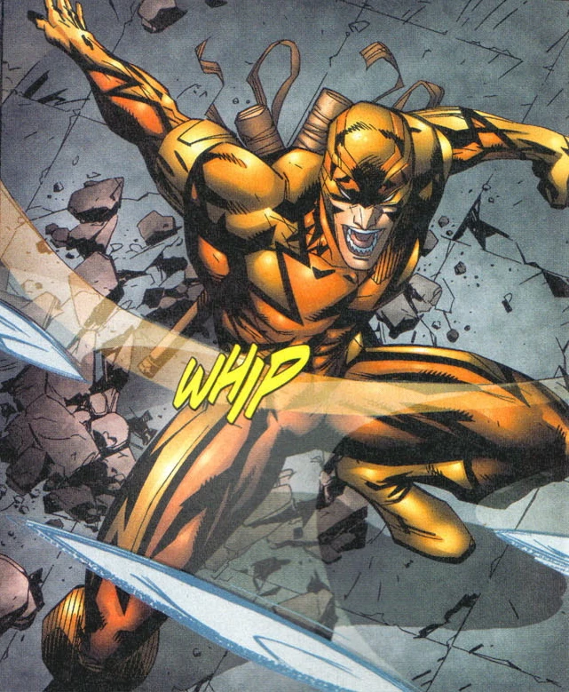

Ficha Técnica:
Dick Grayson era um órfão que, quando criança, fazia parte de uma família de acrobatas do circo. Ele e seus pais foram vítimas de um acidente causado por criminosos, e os pais de Dick morreram, deixando-o sozinho. Bruce Wayne (Batman) viu o potencial de Dick e o adotou, treinando-o para ser seu parceiro como Robin. Dick Grayson atuou como Robin por vários anos ao lado de Batman, sendo uma parte fundamental da luta contra o crime em Gotham City. A principal mudança na vida de Dick Grayson aconteceu quando ele cresceu e começou a se questionar sobre sua identidade e seu papel ao lado de Batman. Dick sentia que precisava se afastar do estilo de Batman e buscar seu próprio caminho, além de sentir que a dinâmica com Batman estava ficando cada vez mais difícil devido ao temperamento do Cavaleiro das Trevas. A ideia por trás de Asa Noturna é que Dick Grayson deixaria o manto de Robin para trás, mas ainda assim continuaria lutando contra o crime de uma maneira independente. Em vez de usar o uniforme de Robin, ele passou a usar um traje preto e azul, com um estilo mais próprio, refletindo seu amadurecimento. O nome "Asa Noturna" vem de uma lenda de uma cidade fictícia em que o herói Asa Noturna protegia a cidade à noite, e Dick adotou esse nome como uma forma de se distanciar de Batman e de sua antiga identidade.
Identidade civil: Dick Grayson
Idade: 27 anos
Equipamento: Bastão
Batfamília:
Batman
Batgirl

Capuz Vermelho
Damian Wayne

Alfred

Equipe Justiça Jovem:
Aqualed

Kid Flash

Superboy

Miss Marte

Artemis

Zatanna

Besouro Azul

Moça Maravilha

Vilões:
Shrike
Exterminador

Arassa Quarteirão